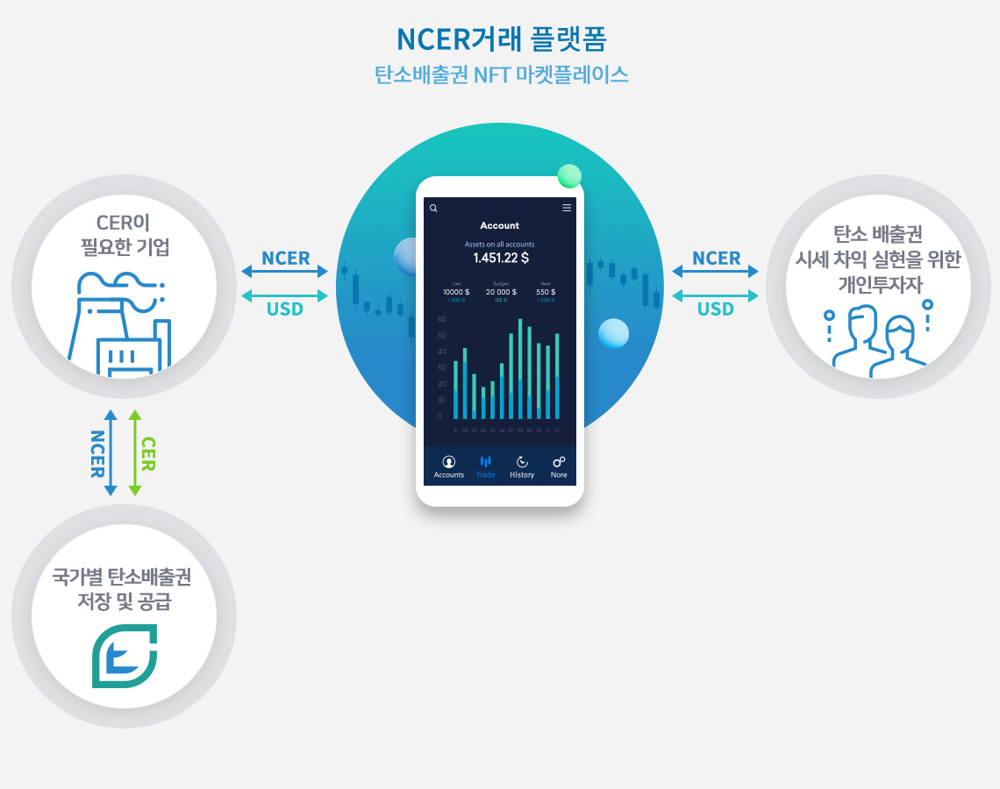

기후 위기: 더 이상 미룰 수 없는 인류의 생존 과제
글로벌 기후 위기는 단순한 환경 문제를 넘어 국가와 기업의 명운을 결정짓는 핵심 위협이 되었습니다.

글로벌 경제 피해
매년 자연재해로 인한 경제 손실액
기후 사망자 수
극한 기후로 인한 연간 사망자 추산치
대한민국 기후대응 주소
대한민국은 기후대응지수(CCPI) 세계 최하위권(60위)에 머물며 국제적 압력에 노출되어 있습니다.
- 1조 3,000억원: 2020년 국내 자연재해 피해액
- 세계 14번째: 탄소중립 법제화국으로서 강력한 규제 이행
- 2050 Net Zero: 국가 목표 달성을 위한 급진적 전환의 필요성
급성장하는 탄소 시장의 메커니즘
전통적인 규제 시장을 넘어 자발적 탄소 시장(VCM)은 폭발적인 성장을 앞두고 있습니다.
규제 시장 (ETS)
정부의 할당량 내에서 탄소 배출 권리를 거래하는 법적 구속력이 있는 시장입니다.
자발적 시장 (VCM)
기업의 ESG 가치 제고를 위해 자발적으로 배출권을 구매/거래하는 혁신적인 신시장입니다.
수익 창출 & 비용 절감 모델 (MAC 로직)
자체 감축 역량이 높은 기업(A)은 남는 배출권을 판매하여 수익을 창출하고, 감축 여력이 낮은 기업(B)은 시장 매입을 통해 규제 과징금 리스크를 해지합니다. 이는 경제적으로 가장 효율적인 탄소 중립 달성 경로입니다.
한계감축비용(MAC)곡선 및 시장 거래 원리

VCM 시장의 기하급수적 성장 전망 (2030)
기후 변화에 맞춘 전략적 기술 파트너십
대한민국 탄소중립 기본법 법제화 등 변화하는 정책 환경에 최적화된 신재생 에너지 및 저감 기술을 제공합니다.
탄소 경영 로드맵
단기 리스크 대응부터 장기 비즈니스 전환까지, 전문적인 3단계 실행 전략을 확인하십시오.
기술 기반 원가 혁신
감축 기술 확보를 생산 원가 절감의 핵심 동력으로 전환하여 본원적 경쟁력을 강화합니다.
기업의 대응 전략:
한계비용 최적화와 리스크 헤지
단기: 규제 최적화
정밀한 온실가스 인벤토리 구축 및 실질 배출량 산정을 통해 할당량 관리 비용을 최소화합니다.
중기: 자산 고도화
탄소 저감 기술 및 신재생 에너지 직접 투자를 통해 배출권 자급률을 제고하고 포트폴리오를 다변화합니다.
장기: 미래 경쟁력
공급망 내 탄소 중립 브랜드 가치를 확립하고 저감 솔루션의 자산화를 통해 신규 수익 모델을 창출합니다.
탄소 경제 이해하기
탄소 시장의 두 축, 규제 시장(ETS)과 자발적 시장(VCM)을 통해 새로운 기회를 포착하십시오.
규제 시장 (ETS)
정부 설정 법적 할당량 내 거래
- 강제성 높음 (미이행 시 과징금)
- 에너지 다소비 기업 의무 주체
- 국가 NDC 달성 목적
자발적 시장 (VCM)
민간 주도 자발적 감축 성과 거래

- 강제성 없음 (ESG 가치 창출)
- 기업, NGO, 개인 등 제한 없음
- 2030년까지 수요 15배 증가 전망
글로벌 이정표
교토의정서 채택
온실가스 감축 의무 체제 구축 및 배출권 거래제의 효시
파리 기후협약
전 세계 197개국 참여, 1.5℃ 제한 목표에 대한 전 지구적 합의
탄소 ETF (KRBN) 상장
탄소 배출권의 본격적인 금융 자산화 및 투자 접근성 확대
자발적 시장의 폭발적 성장
5년 만에 5배 이상 성장, 2030년까지 15배 성장 예상